Last updated: 2022-06-16
Checks: 7 0
Knit directory:
paed-cf-cite-seq/
This reproducible R Markdown analysis was created with workflowr (version 1.7.0). The Checks tab describes the reproducibility checks that were applied when the results were created. The Past versions tab lists the development history.
Great! Since the R Markdown file has been committed to the Git repository, you know the exact version of the code that produced these results.
Great job! The global environment was empty. Objects defined in the global environment can affect the analysis in your R Markdown file in unknown ways. For reproduciblity it’s best to always run the code in an empty environment.
The command set.seed(20210524) was run prior to running the code in the R Markdown file.
Setting a seed ensures that any results that rely on randomness, e.g.
subsampling or permutations, are reproducible.
Great job! Recording the operating system, R version, and package versions is critical for reproducibility.
Nice! There were no cached chunks for this analysis, so you can be confident that you successfully produced the results during this run.
Great job! Using relative paths to the files within your workflowr project makes it easier to run your code on other machines.
Great! You are using Git for version control. Tracking code development and connecting the code version to the results is critical for reproducibility.
The results in this page were generated with repository version 8255c24. See the Past versions tab to see a history of the changes made to the R Markdown and HTML files.
Note that you need to be careful to ensure that all relevant files for the
analysis have been committed to Git prior to generating the results (you can
use wflow_publish or wflow_git_commit). workflowr only
checks the R Markdown file, but you know if there are other scripts or data
files that it depends on. Below is the status of the Git repository when the
results were generated:
Ignored files:
Ignored: .Rhistory
Ignored: .Rproj.user/
Ignored: analysis/obsolete/
Ignored: code/obsolete/
Ignored: data/190930_A00152_0150_BHTYCMDSXX/
Ignored: data/CellRanger/
Ignored: data/GSE127465_RAW/
Ignored: data/SCEs/02_ZILIONIS.sct_normalised.SEU.rds
Ignored: data/SCEs/03_C133_Neeland.demultiplexed.SCE.rds
Ignored: data/SCEs/03_C133_Neeland.emptyDrops.SCE.rds
Ignored: data/SCEs/03_C133_Neeland.nuclear_fraction_calls.rds
Ignored: data/SCEs/03_C133_Neeland.preprocessed.SCE.rds
Ignored: data/SCEs/03_CF_BAL_Pilot.CellRanger_v6.SCE.rds
Ignored: data/SCEs/03_CF_BAL_Pilot.emptyDrops.SCE.rds
Ignored: data/SCEs/03_CF_BAL_Pilot.nuclear_fraction_calls.rds
Ignored: data/SCEs/03_CF_BAL_Pilot.preprocessed.SCE.rds
Ignored: data/SCEs/03_COMBO.clustered.SEU.rds
Ignored: data/SCEs/03_COMBO.clustered_annotated_macrophages_diet.SEU.rds
Ignored: data/SCEs/03_COMBO.clustered_annotated_others_diet.SEU.rds
Ignored: data/SCEs/03_COMBO.clustered_annotated_tcells_diet.SEU.rds
Ignored: data/SCEs/03_COMBO.clustered_azimuth.SEU.rds
Ignored: data/SCEs/03_COMBO.clustered_azimuth_v2.SEU.rds
Ignored: data/SCEs/03_COMBO.clustered_diet.SEU.rds
Ignored: data/SCEs/03_COMBO.integrated.SEU.rds
Ignored: data/SCEs/03_COMBO.zilionis_mapped.SEU.rds
Ignored: data/SCEs/04_C133_Neeland.adt_dsb_normalised.rds
Ignored: data/SCEs/04_C133_Neeland.adt_integrated.rds
Ignored: data/SCEs/04_C133_Neeland.all_integrated.SEU.rds
Ignored: data/SCEs/04_CF_BAL_Pilot.CellRanger_v6.SCE.rds
Ignored: data/SCEs/04_CF_BAL_Pilot.emptyDrops.SCE.rds
Ignored: data/SCEs/04_CF_BAL_Pilot.preprocessed.SCE.rds
Ignored: data/SCEs/04_CF_BAL_Pilot.transfer_adt.SEU.rds
Ignored: data/SCEs/04_COMBO.clean_clustered.SEU.rds
Ignored: data/SCEs/04_COMBO.clean_clustered.SEU_bk.rds
Ignored: data/SCEs/04_COMBO.clean_integrated.SEU.rds
Ignored: data/SCEs/04_COMBO.clean_integrated.SEU_bk.rds
Ignored: data/SCEs/04_COMBO.clean_macrophages_diet.SEU.rds
Ignored: data/SCEs/04_COMBO.clean_others_diet.SEU.rds
Ignored: data/SCEs/04_COMBO.clean_tcells_diet.SEU.rds
Ignored: data/SCEs/04_COMBO.clustered.SEU.rds
Ignored: data/SCEs/04_COMBO.clustered_annotated_adt_diet.SEU.rds
Ignored: data/SCEs/04_COMBO.clustered_annotated_lung_diet.SEU.rds
Ignored: data/SCEs/04_COMBO.clustered_annotated_macrophages_diet.SEU.rds
Ignored: data/SCEs/04_COMBO.clustered_annotated_others_diet.SEU.rds
Ignored: data/SCEs/04_COMBO.clustered_annotated_tcells_diet.SEU.rds
Ignored: data/SCEs/04_COMBO.clustered_diet.SEU.rds
Ignored: data/SCEs/04_COMBO.integrated.SEU.rds
Ignored: data/SCEs/04_COMBO.macrophages_clustered.SEU.rds
Ignored: data/SCEs/04_COMBO.macrophages_integrated.SEU.rds
Ignored: data/SCEs/04_COMBO.others_clustered.SEU.rds
Ignored: data/SCEs/04_COMBO.others_integrated.SEU.rds
Ignored: data/SCEs/04_COMBO.tcells_clustered.SEU.rds
Ignored: data/SCEs/04_COMBO.tcells_integrated.SEU.rds
Ignored: data/SCEs/04_COMBO.zilionis_mapped.SEU.rds
Ignored: data/SCEs/05_CF_BAL_Pilot.transfer_adt.SEU.rds
Ignored: data/SCEs/05_COMBO.clean_clustered.SEU.rds
Ignored: data/SCEs/05_COMBO.clean_integrated.SEU.rds
Ignored: data/SCEs/05_COMBO.clean_macrophages_diet.SEU.rds
Ignored: data/SCEs/05_COMBO.clean_others_diet.SEU.rds
Ignored: data/SCEs/05_COMBO.clean_tcells_diet.SEU.rds
Ignored: data/SCEs/05_COMBO.clustered_annotated_adt_diet.SEU.rds
Ignored: data/SCEs/05_COMBO.clustered_annotated_lung_diet.SEU.rds
Ignored: data/SCEs/05_COMBO.clustered_annotated_macrophages_diet.SEU.rds
Ignored: data/SCEs/05_COMBO.clustered_annotated_others_diet.SEU.rds
Ignored: data/SCEs/05_COMBO.clustered_annotated_tcells_diet.SEU.rds
Ignored: data/SCEs/05_COMBO.macrophages_clustered.SEU.rds
Ignored: data/SCEs/05_COMBO.macrophages_integrated.SEU.rds
Ignored: data/SCEs/05_COMBO.others_clustered.SEU.rds
Ignored: data/SCEs/05_COMBO.others_integrated.SEU.rds
Ignored: data/SCEs/05_COMBO.tcells_clustered.SEU.rds
Ignored: data/SCEs/05_COMBO.tcells_integrated.SEU.rds
Ignored: data/SCEs/06_COMBO.clean_clustered.SEU.rds
Ignored: data/SCEs/06_COMBO.clean_integrated.SEU.rds
Ignored: data/SCEs/06_COMBO.clean_macrophages_diet.SEU.rds
Ignored: data/SCEs/06_COMBO.clean_others_diet.SEU.rds
Ignored: data/SCEs/06_COMBO.clean_tcells_diet.SEU.rds
Ignored: data/SCEs/06_COMBO.macrophages_clustered.SEU.rds
Ignored: data/SCEs/06_COMBO.macrophages_integrated.SEU.rds
Ignored: data/SCEs/06_COMBO.others_clustered.SEU.rds
Ignored: data/SCEs/06_COMBO.others_integrated.SEU.rds
Ignored: data/SCEs/06_COMBO.tcells_clustered.SEU.rds
Ignored: data/SCEs/06_COMBO.tcells_integrated.SEU.rds
Ignored: data/SCEs/C133_Neeland.CellRanger.SCE.rds
Ignored: data/SCEs/obsolete/
Ignored: data/emptyDrops/
Ignored: data/obsolete/
Ignored: data/sample_sheets/obsolete/
Ignored: output/marker-analysis/obsolete/
Ignored: output/obsolete/
Ignored: rename_captures.R
Ignored: renv/library/
Ignored: renv/staging/
Ignored: wflow_background.R
Unstaged changes:
Modified: .gitignore
Modified: .renvignore
Deleted: analysis/03_C133_Neeland.demultiplex.Rmd
Deleted: analysis/03_C133_Neeland.preprocess.Rmd
Deleted: analysis/03_COMBO.clustering_annotation.Rmd
Deleted: analysis/04_CF_BAL_Pilot.emptyDrops.Rmd
Deleted: analysis/04_CF_BAL_Pilot.preprocess.Rmd
Deleted: analysis/04_COMBO.transfer_proteins.Rmd
Deleted: analysis/05_COMBO.cluster_macrophages.Rmd
Deleted: analysis/05_COMBO.cluster_others.Rmd
Deleted: analysis/05_COMBO.cluster_tcells.Rmd
Deleted: analysis/05_COMBO.expression_analysis.Rmd
Deleted: analysis/05_COMBO.postprocess_all.Rmd
Deleted: analysis/05_COMBO.postprocess_macrophages.Rmd
Deleted: analysis/05_COMBO.postprocess_others.Rmd
Deleted: analysis/05_COMBO.postprocess_tcells.Rmd
Modified: analysis/gettingStarted.Rmd
Modified: renv/.gitignore
Modified: renv/settings.dcf
Note that any generated files, e.g. HTML, png, CSS, etc., are not included in this status report because it is ok for generated content to have uncommitted changes.
These are the previous versions of the repository in which changes were made
to the R Markdown (analysis/09_COMBO.cluster_tcells.Rmd) and HTML (docs/09_COMBO.cluster_tcells.html)
files. If you’ve configured a remote Git repository (see
?wflow_git_remote), click on the hyperlinks in the table below to
view the files as they were in that past version.
| File | Version | Author | Date | Message |
|---|---|---|---|---|
| Rmd | 8255c24 | Jovana Maksimovic | 2022-06-16 | wflow_publish(c(paste0("analysis/", list.files(path = here::here("analysis"), |
Load the clustered and labelled CF_BAL_Pilot and C133_Neeland data.
seu <- readRDS(file = here("data/SCEs/05_COMBO.clustered_annotated_tcells_diet.SEU.rds"))
DefaultAssay(seu) <- "RNA"
entrez <- select(org.Hs.eg.db, columns = c("ENTREZID","SYMBOL"),
keys = keys(org.Hs.eg.db))
entrez <- entrez[!is.na(entrez$ENTREZID),]
seu <- seu[alias2SymbolTable(rownames(seu)) %in% entrez$SYMBOL,]Normalise and integrate data.
out <- here("data/SCEs/06_COMBO.tcells_integrated.SEU.rds")
if(!file.exists(out)){
seuInt <- intDat(seu, type = "RNA",
reference = unique(seu$capture[seu$experiment == 1]))
saveRDS(seuInt, file = out)
} else {
seuInt <- readRDS(file = out)
}Visualise the data.
seuInt <- RunPCA(seuInt, verbose = FALSE, dims = 1:30) %>%
RunUMAP(verbose = FALSE, dims = 1:30)DimPlot(seuInt, group.by = "experiment", combine = FALSE)[[1]]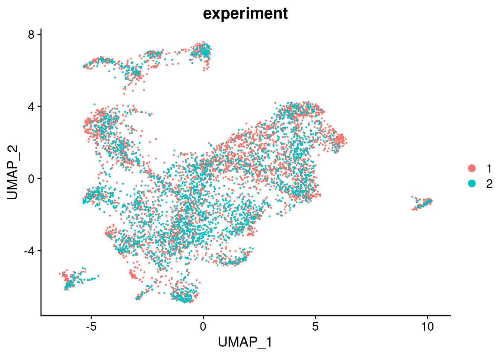
p1 <- DimPlot(seuInt, reduction = "pca", group.by = "donor")
p2 <- DimPlot(seuInt, reduction = "pca", dims = c(1,3), group.by = "donor")
p3 <- DimPlot(seuInt, reduction = "pca", dims = c(2,3), group.by = "donor")
p4 <- DimPlot(seuInt, reduction = "pca", dims = c(3,4), group.by = "donor")
((p1 | p2) / (p3 | p4)) + plot_layout(guides = "collect") &
theme(legend.text = element_text(size = 8),
plot.title = element_text(size = 10),
axis.title = element_text(size = 9),
axis.text = element_text(size = 8))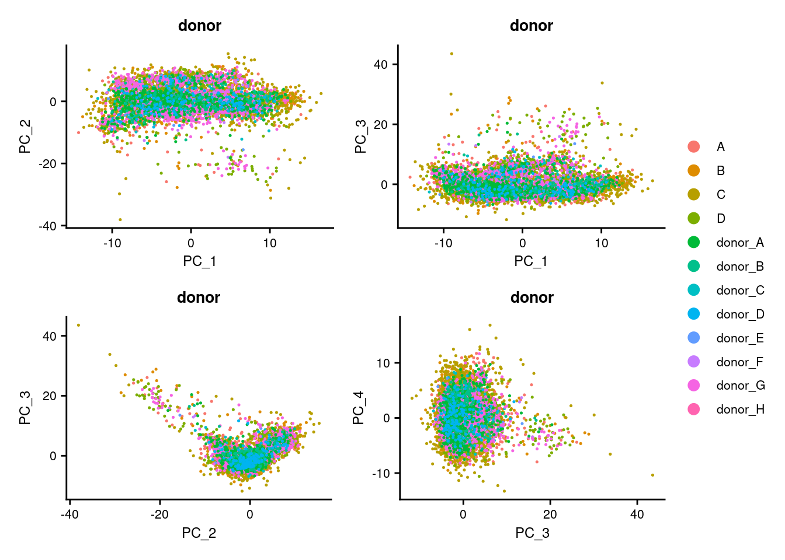
DimHeatmap(seuInt, dims = 1:30, cells = 500, balanced = TRUE)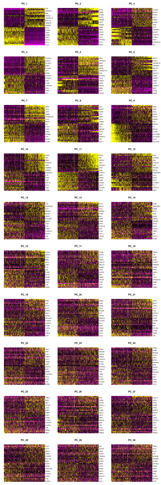
ElbowPlot(seuInt, ndims = 30)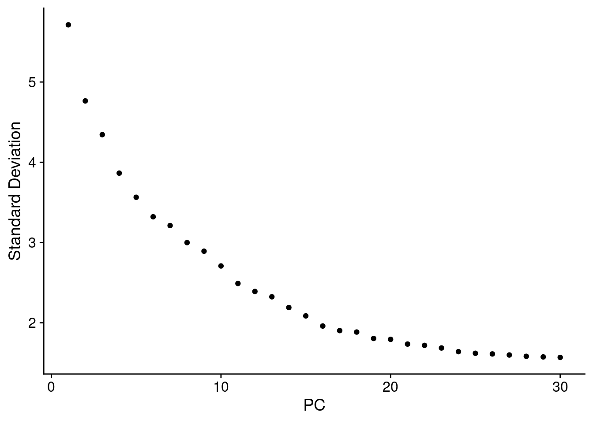
Examine cluster number and size with respect to resolution.
out <- here("data/SCEs/06_COMBO.tcells_clustered.SEU.rds")
if(!file.exists(out)){
seuInt <- FindNeighbors(seuInt, reduction = "pca", dims = 1:30)
seuInt <- FindClusters(seuInt, algorithm = 3,
resolution = seq(0.1, 1, by = 0.1))
seuInt <- RunUMAP(seuInt, dims = 1:10)
saveRDS(seuInt, file = out)
} else {
seuInt <- readRDS(file = out)
}
clustree::clustree(seuInt)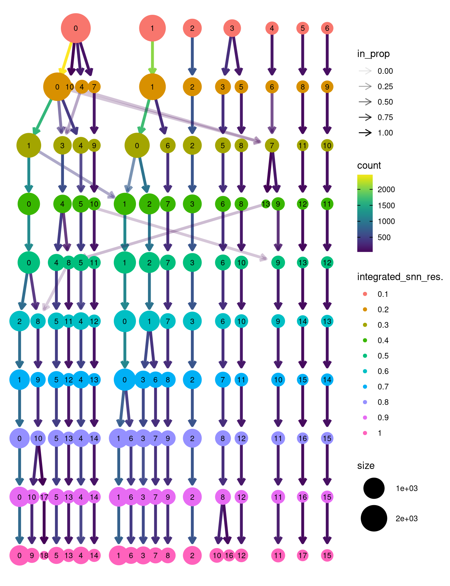
Choose a resolution. Visualise UMAP.
grp <- "integrated_snn_res.1"
DimPlot(seuInt, reduction = 'umap', label = TRUE, repel = TRUE,
label.size = 2.5, group.by = grp) + NoLegend()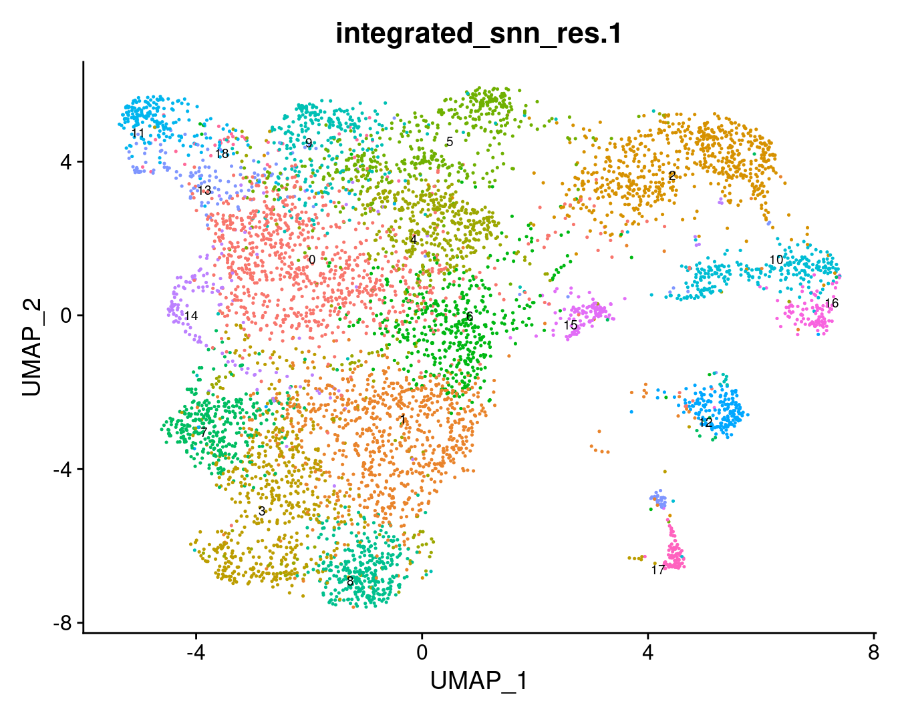
options(ggrepel.max.overlaps = Inf)
DimPlot(seuInt, reduction = 'umap', label = TRUE, repel = TRUE,
label.size = 2.5, group.by = "predicted.annotation.l1") +
theme(legend.position = "bottom") + NoLegend()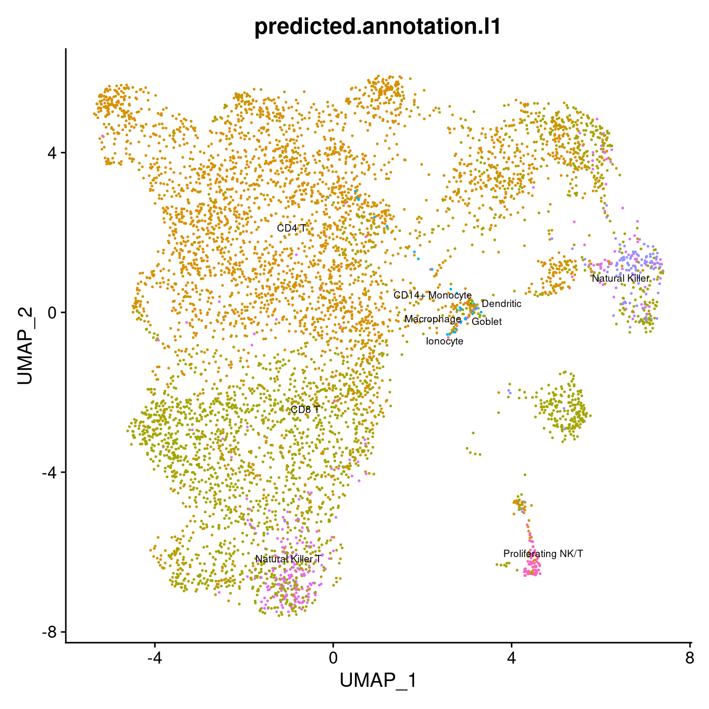
Visualise quality metrics by cluster.
seuInt@meta.data %>%
ggplot(aes(x = integrated_snn_res.1,
y = predicted.annotation.l1.score,
fill = integrated_snn_res.1)) +
geom_violin(scale = "width") +
NoLegend() -> p1
seuInt@meta.data %>%
ggplot(aes(x = integrated_snn_res.1,
y = nCount_RNA,
fill = integrated_snn_res.1)) +
geom_violin(scale = "area") +
scale_y_log10() +
NoLegend() -> p2
seuInt@meta.data %>%
ggplot(aes(x = integrated_snn_res.1,
y = nFeature_RNA,
fill = integrated_snn_res.1)) +
geom_violin(scale = "area") +
scale_y_log10() +
NoLegend() -> p3
seuInt@meta.data %>%
ggplot(aes(x = integrated_snn_res.1,
y = predicted.ann_level_3.score,
fill = integrated_snn_res.1)) +
geom_violin(scale = "area") +
scale_y_log10() +
NoLegend() -> p4
((p1 | p2) / (p3 | p4)) & theme(text = element_text(size = 8))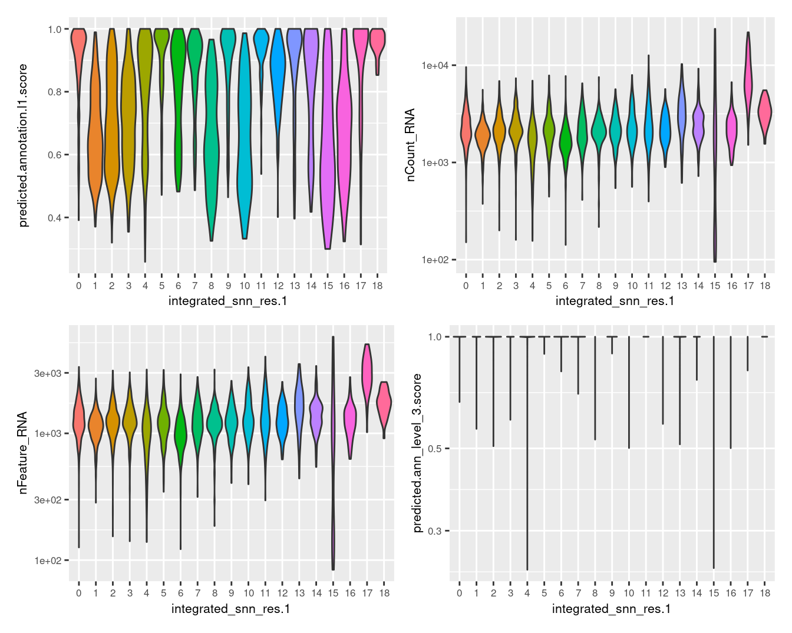
limma# limma-trend for DE
Idents(seuInt) <- grp
counts <- as.matrix(seuInt[["RNA"]]@counts)
y.org <- DGEList(counts)
logcounts <- normCounts(y.org, log = TRUE, prior.count = 0.5)
maxclust <- length(levels(Idents(seuInt))) - 1
clustgrp <- paste0("c", Idents(seuInt))
clustgrp <- factor(clustgrp, levels = paste0("c", 0:maxclust))
donor <- seuInt$donor
design <- model.matrix(~ 0 + clustgrp + donor)
colnames(design)[1:(length(levels(clustgrp)))] <- levels(clustgrp)
# Create contrast matrix
mycont <- matrix(NA, ncol = length(levels(clustgrp)),
nrow = length(levels(clustgrp)))
rownames(mycont) <- colnames(mycont) <- levels(clustgrp)
diag(mycont) <- 1
mycont[upper.tri(mycont)] <- -1/(length(levels(factor(clustgrp))) - 1)
mycont[lower.tri(mycont)] <- -1/(length(levels(factor(clustgrp))) - 1)
# Fill out remaining rows with 0s
zero.rows <- matrix(0, ncol = length(levels(clustgrp)),
nrow = (ncol(design) - length(levels(clustgrp))))
fullcont <- rbind(mycont, zero.rows)
rownames(fullcont) <- colnames(design)
fit <- lmFit(logcounts, design)
fit.cont <- contrasts.fit(fit, contrasts = fullcont)
fit.cont <- eBayes(fit.cont, trend = TRUE, robust = TRUE)
summary(decideTests(fit.cont)) c0 c1 c2 c3 c4 c5 c6 c7 c8 c9 c10 c11
Down 660 948 1162 542 1843 754 967 441 846 378 594 371
NotSig 14584 14647 13888 14927 13137 14523 14691 15167 14434 15187 14216 14809
Up 757 406 951 532 1021 724 343 393 721 436 1191 821
c12 c13 c14 c15 c16 c17 c18
Down 206 219 61 935 190 50 103
NotSig 15504 14673 15650 14097 15303 14096 15270
Up 291 1109 290 969 508 1855 628tr <- treat(fit.cont, fc = 1.5)
dt <- decideTests(tr)
summary(dt) c0 c1 c2 c3 c4 c5 c6 c7 c8 c9 c10 c11
Down 6 1 7 0 21 9 2 1 4 4 10 8
NotSig 15990 15994 15978 15983 15978 15980 15995 15990 15966 15987 15972 15978
Up 5 6 16 18 2 12 4 10 31 10 19 15
c12 c13 c14 c15 c16 c17 c18
Down 0 3 0 14 7 2 6
NotSig 15988 15986 15975 15981 15967 15898 15971
Up 13 12 26 6 27 101 24par(mfrow=c(3,3))
for(i in 1:ncol(mycont)){
plotMD(tr, coef = i, status = dt[,i], hl.cex = 0.5)
abline(h = 0, col = "lightgrey")
lines(lowess(tr$Amean, tr$coefficients[,i]), lwd = 1.5, col = 4)
}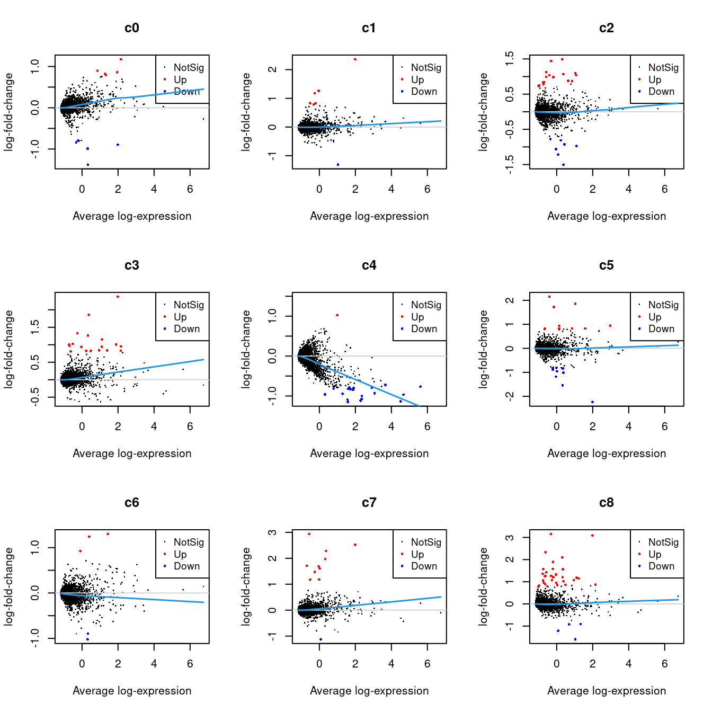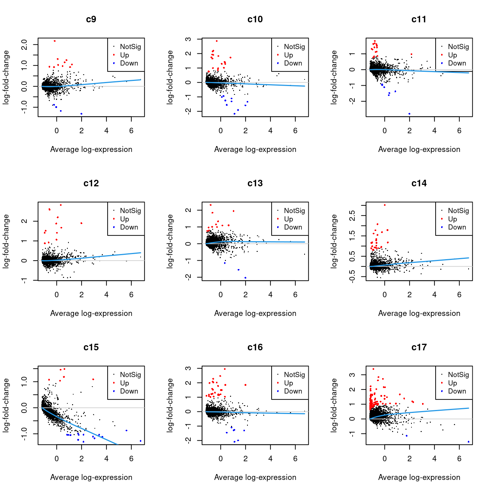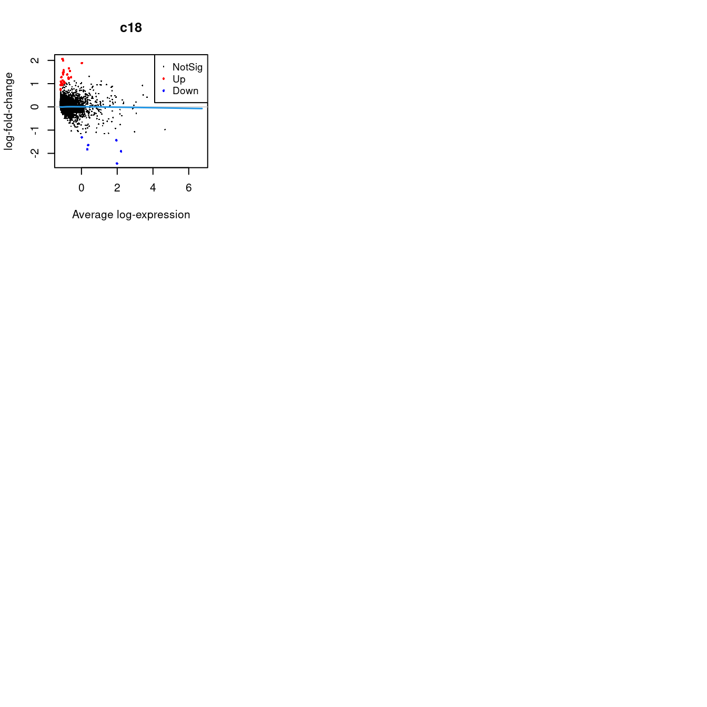
options(scipen=-1, digits = 6)
contnames <- colnames(mycont)
dirName <- here("output/marker-analysis/05-COMBO-tcells")
if(!dir.exists(dirName)) dir.create(dirName)
getCols <- setNames(c("SYMBOL","ENTREZID"),c("SYMBOL","ENTREZID"))
tr$genes <- data.frame(
lapply(getCols, function(column) {
mapIds(
x = org.Hs.eg.db,
keys = rownames(tr),
keytype = "SYMBOL",
column = column)
}),
row.names = rownames(tr))
gsAnnots <- buildIdx(entrezIDs = tr$genes$ENTREZID, species = "human",
msigdb.gsets = c("c2","c5"))[1] "Loading MSigDB Gene Sets ... "
[1] "Loaded gene sets for the collection c2 ..."
[1] "Indexed the collection c2 ..."
[1] "Created annotation for the collection c2 ..."
[1] "Loaded gene sets for the collection c5 ..."
[1] "Indexed the collection c5 ..."
[1] "Created annotation for the collection c5 ..."
[1] "Building KEGG pathways annotation object ... "reactomeIdx <-gsAnnots$c2@idx[grep("REACTOME",
names(gsAnnots$c2@idx))]
for(i in 1:length(contnames)){
top <- topTreat(tr, coef = i, n = Inf)
top <- top[top$logFC > 0, ]
write.csv(top[1:100, ],
file = glue("{dirName}/up-cluster-{contnames[i]}.csv"))
cameraPR(tr$t[,i], reactomeIdx) %>%
rownames_to_column(var = "Pathway") %>%
slice_head(n = 20) %>%
write_csv(file = here(glue("{dirName}/REACTOME-cluster-{contnames[i]}.csv")))
}Genes duplicated between clusters are excluded.
sig.genes <- vector("list", ncol(tr))
p <- vector("list",length(sig.genes))
DefaultAssay(seuInt) <- "RNA"
for(i in 1:length(sig.genes)){
top <- topTreat(tr, coef = i, n = Inf)
sig.genes[[i]] <- rownames(top)[top$logFC > 0][1:10]
}
sig <- unlist(sig.genes)
geneCols <- c(rep(rep(c("grey","black"), each = 10), ncol(tr)/2),
rep("grey", 10))[!duplicated(sig)]
DotPlot(seuInt, features = sig[!duplicated(sig)],
group.by = "integrated_snn_res.1",
cols = c("lightgrey", "red"),
dot.scale = 3) +
RotatedAxis() +
FontSize(y.text = 8, x.text = 12) +
labs(y = element_blank(), x = element_blank()) +
coord_flip() +
theme(axis.text.y = element_text(color = geneCols)) +
ggtitle("Top 10 cluster marker genes without duplicates")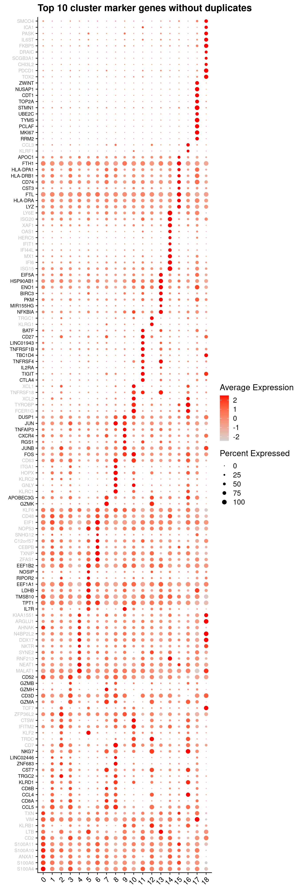
seuInt@meta.data %>%
ggplot(aes(x = integrated_snn_res.1, fill = integrated_snn_res.1)) +
geom_bar() +
geom_text(aes(label = ..count..), stat = "count",
vjust = -0.5, colour = "black", size = 2) +
theme(axis.text.x = element_text(angle = 90, vjust = 0.5, hjust = 1)) +
NoLegend()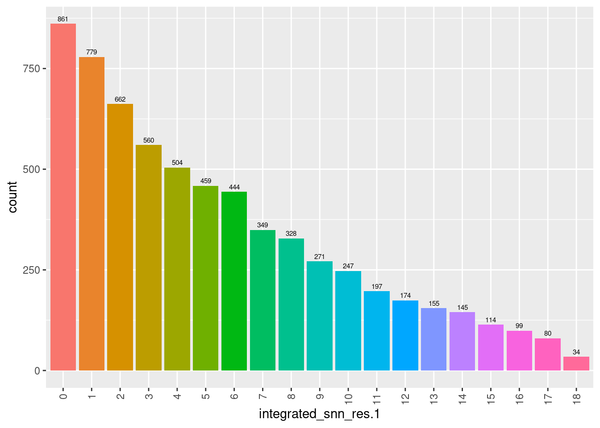
Seurat objectseuAdt <- readRDS(here("data",
"SCEs",
"05_COMBO.clustered_annotated_adt_diet.SEU.rds"))
seuAdt <- subset(seuAdt, cells = colnames(seuInt))
all(colnames(seuAdt) == colnames(seuInt))[1] TRUEseuInt[["ADT.dsb"]] <- seuAdt[["ADT.dsb"]]
seuInt[["ADT.raw"]] <- seuAdt[["ADT.raw"]]
seuIntAn object of class Seurat
31490 features across 6462 samples within 5 assays
Active assay: RNA (16001 features, 0 variable features)
4 other assays present: SCT, integrated, ADT.dsb, ADT.raw
2 dimensional reductions calculated: pca, umaprm(seuAdt)
gc() used (Mb) gc trigger (Mb) max used (Mb)
Ncells 12106509 646.6 21569464 1152 21569464 1152.0
Vcells 403798411 3080.8 1197604212 9137 997932505 7613.7prots <- read.csv(file = here("data",
"sample_sheets",
"TotalSeq-A_Universal_Cocktail_v1.0.csv")) %>%
dplyr::filter(grepl("^A0", id)) %>%
dplyr::filter(!grepl("[Ii]sotype", name)) Normalised with DSB. CITE-seq ADT data was transferred to scRNA-seq using reference mapping and transfer.
cbind(seuInt@meta.data,
as.data.frame(t(seuInt@assays$ADT.dsb@data))) %>%
dplyr::group_by(integrated_snn_res.1, experiment) %>%
dplyr::summarize_at(.vars = prots$id, .funs = median) %>%
pivot_longer(c(-integrated_snn_res.1, -experiment), names_to = "ADT",
values_to = "ADT Exp.") %>%
left_join(prots, by = c("ADT" = "id")) %>%
mutate(Cluster = as.character(integrated_snn_res.1)) %>%
dplyr::rename(Protein = name) |>
dplyr::filter(experiment == 2) |>
ungroup() -> dat
plot(density(dat$`ADT Exp.`))
topMax <- 8
abline(v = topMax, lty = 2, col = "grey")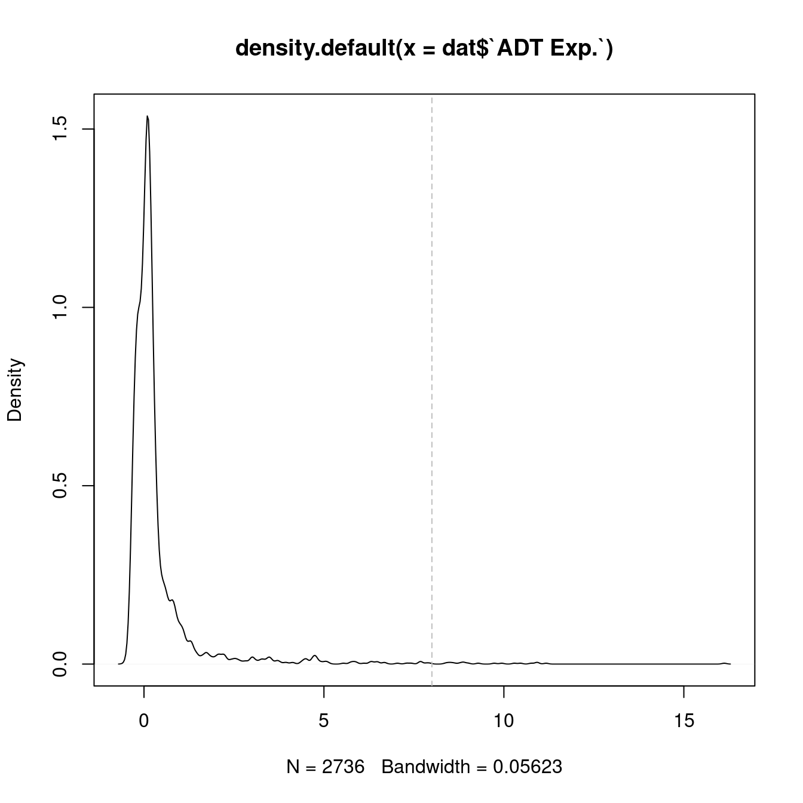
dat |> heatmap(
.column = Cluster,
.row = Protein,
.value = `ADT Exp.`,
scale = "none",
rect_gp = grid::gpar(col = "white", lwd = 1),
palette_value = circlize::colorRamp2(seq(-1, topMax, length.out = 256),
viridis::magma(256)),
show_row_names = TRUE,
column_names_gp = grid::gpar(fontsize = 10),
column_title_gp = grid::gpar(fontsize = 12),
row_names_gp = grid::gpar(fontsize = 8),
row_title_gp = grid::gpar(fontsize = 12),
column_title_side = "top",
heatmap_legend_param = list(direction = "vertical")) 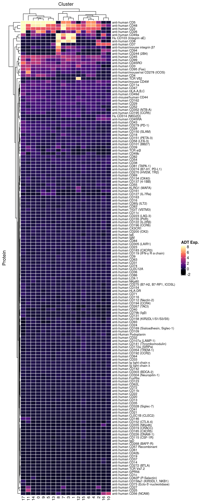
adt <- read_csv(file = here("data/Proteins_T-NK_22.04.22.csv"))
adt <- adt[!duplicated(adt$DNA_ID),]
dat %>%
inner_join(adt, by = c("ADT" = "DNA_ID")) %>%
dplyr::mutate(Protein = `Name for heatmap`) |>
heatmap(
.column = Cluster,
.row = Protein,
.value = `ADT Exp.`,
scale = "none",
palette_value = circlize::colorRamp2(seq(-1, topMax, length.out = 256),
viridis::magma(256)),
rect_gp = grid::gpar(col = "white", lwd = 1),
show_row_names = TRUE,
column_names_gp = grid::gpar(fontsize = 10),
column_title_gp = grid::gpar(fontsize = 12),
row_names_gp = grid::gpar(fontsize = 8),
row_title_gp = grid::gpar(fontsize = 12),
column_title_side = "top",
heatmap_legend_param = list(direction = "vertical")) 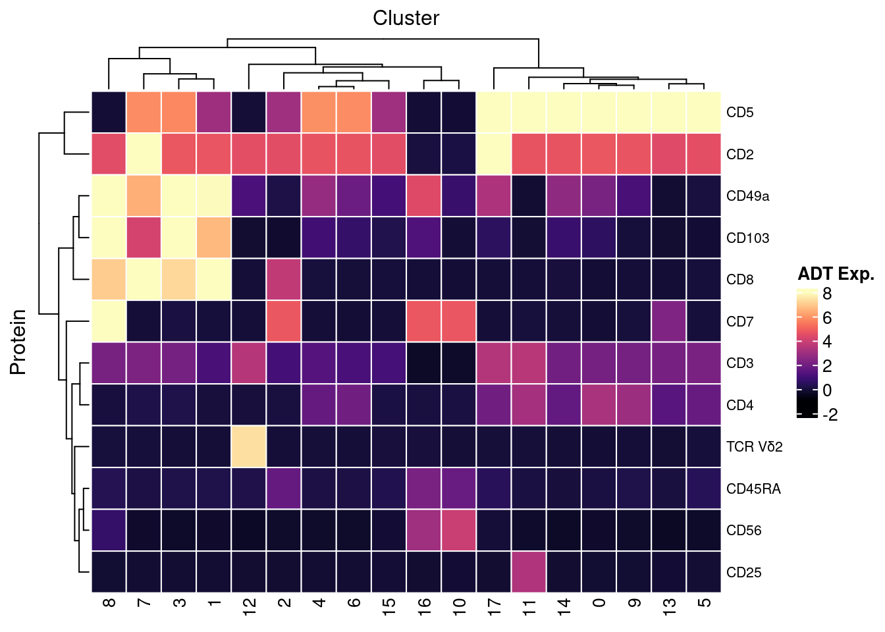
markers <- read_csv(file = here("data",
"T-NK_subclusters_cytokines.csv"),
col_names = FALSE)
p <- DotPlot(seuInt,
features = markers$X1,
cols = c("grey", "red"),
dot.scale = 5,
assay = "RNA",
group.by = "integrated_snn_res.1") +
theme(axis.text.x = element_text(angle = 90,
hjust = 1,
vjust = 0.5,
size = 8),
axis.text.y = element_text(size = 8),
text = element_text(size = 8)) +
coord_flip() +
labs(y = "Cluster", x = "Cytokine")
p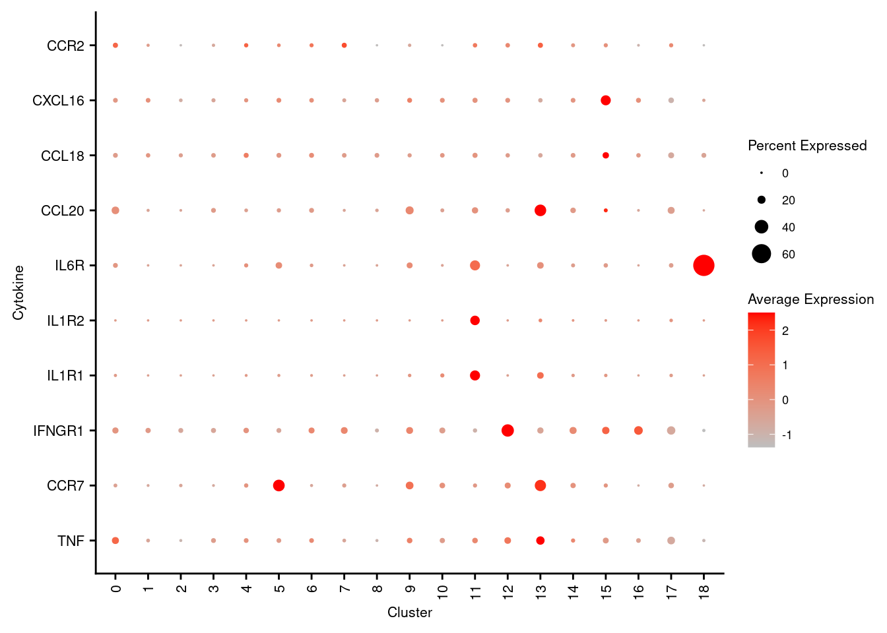
sessioninfo::session_info()─ Session info ───────────────────────────────────────────────────────────────
setting value
version R version 4.1.0 (2021-05-18)
os CentOS Linux 7 (Core)
system x86_64, linux-gnu
ui X11
language (EN)
collate en_AU.UTF-8
ctype en_AU.UTF-8
tz Australia/Melbourne
date 2022-06-16
pandoc 2.17.1.1 @ /usr/lib/rstudio-server/bin/quarto/bin/ (via rmarkdown)
─ Packages ───────────────────────────────────────────────────────────────────
! package * version date (UTC) lib source
P abind 1.4-5 2016-07-21 [?] CRAN (R 4.1.0)
P annotate 1.72.0 2021-10-26 [?] Bioconductor
P AnnotationDbi * 1.56.2 2021-11-09 [?] Bioconductor
P assertthat 0.2.1 2019-03-21 [?] CRAN (R 4.1.0)
P backports 1.4.1 2021-12-13 [?] CRAN (R 4.1.0)
P beachmat 2.10.0 2021-10-26 [?] Bioconductor
P beeswarm 0.4.0 2021-06-01 [?] CRAN (R 4.1.0)
P Biobase * 2.54.0 2021-10-26 [?] Bioconductor
P BiocGenerics * 0.40.0 2021-10-26 [?] Bioconductor
P BiocManager 1.30.16 2021-06-15 [?] CRAN (R 4.1.0)
P BiocNeighbors 1.12.0 2021-10-26 [?] Bioconductor
P BiocParallel * 1.28.3 2021-12-09 [?] Bioconductor
P BiocSingular 1.10.0 2021-10-26 [?] Bioconductor
P BiocStyle * 2.22.0 2021-10-26 [?] Bioconductor
P Biostrings 2.62.0 2021-10-26 [?] Bioconductor
P bit 4.0.4 2020-08-04 [?] CRAN (R 4.1.0)
P bit64 4.0.5 2020-08-30 [?] CRAN (R 4.0.2)
P bitops 1.0-7 2021-04-24 [?] CRAN (R 4.0.2)
P blob 1.2.2 2021-07-23 [?] CRAN (R 4.1.0)
P bluster 1.4.0 2021-10-26 [?] Bioconductor
P bookdown 0.24 2021-09-02 [?] CRAN (R 4.1.0)
P broom 0.7.11 2022-01-03 [?] CRAN (R 4.1.0)
P bslib 0.3.1 2021-10-06 [?] CRAN (R 4.1.0)
P cachem 1.0.6 2021-08-19 [?] CRAN (R 4.1.0)
P callr 3.7.0 2021-04-20 [?] CRAN (R 4.1.0)
P caTools 1.18.2 2021-03-28 [?] CRAN (R 4.1.0)
P cellranger 1.1.0 2016-07-27 [?] CRAN (R 4.1.0)
P checkmate 2.0.0 2020-02-06 [?] CRAN (R 4.0.2)
P circlize 0.4.13 2021-06-09 [?] CRAN (R 4.1.0)
P cli 3.1.0 2021-10-27 [?] CRAN (R 4.1.0)
P clue 0.3-60 2021-10-11 [?] CRAN (R 4.1.0)
P cluster 2.1.2 2021-04-17 [?] CRAN (R 4.1.0)
P clustree * 0.4.4 2021-11-08 [?] CRAN (R 4.1.0)
P codetools 0.2-18 2020-11-04 [?] CRAN (R 4.1.0)
P colorspace 2.0-2 2021-06-24 [?] CRAN (R 4.0.2)
P ComplexHeatmap 2.10.0 2021-10-26 [?] Bioconductor
P cowplot 1.1.1 2020-12-30 [?] CRAN (R 4.0.2)
P crayon 1.4.2 2021-10-29 [?] CRAN (R 4.1.0)
P data.table 1.14.2 2021-09-27 [?] CRAN (R 4.1.0)
P DBI 1.1.2 2021-12-20 [?] CRAN (R 4.1.0)
P dbplyr 2.1.1 2021-04-06 [?] CRAN (R 4.1.0)
P DelayedArray 0.20.0 2021-10-26 [?] Bioconductor
P DelayedMatrixStats 1.16.0 2021-10-26 [?] Bioconductor
P deldir 1.0-6 2021-10-23 [?] CRAN (R 4.1.0)
P dendextend 1.15.2 2021-10-28 [?] CRAN (R 4.1.0)
P digest 0.6.29 2021-12-01 [?] CRAN (R 4.1.0)
P doParallel 1.0.16 2020-10-16 [?] CRAN (R 4.0.2)
P doRNG 1.8.2 2020-01-27 [?] CRAN (R 4.1.0)
P dplyr * 1.0.7 2021-06-18 [?] CRAN (R 4.1.0)
P dqrng 0.3.0 2021-05-01 [?] CRAN (R 4.1.0)
P DropletUtils * 1.14.1 2021-11-08 [?] Bioconductor
P DT 0.20 2021-11-15 [?] CRAN (R 4.1.0)
P edgeR * 3.36.0 2021-10-26 [?] Bioconductor
P EGSEA * 1.22.0 2021-10-26 [?] Bioconductor
P EGSEAdata 1.22.0 2021-10-30 [?] Bioconductor
P ellipsis 0.3.2 2021-04-29 [?] CRAN (R 4.0.2)
P evaluate 0.14 2019-05-28 [?] CRAN (R 4.0.2)
P fansi 1.0.0 2022-01-10 [?] CRAN (R 4.1.0)
P farver 2.1.0 2021-02-28 [?] CRAN (R 4.0.2)
P fastmap 1.1.0 2021-01-25 [?] CRAN (R 4.1.0)
P fitdistrplus 1.1-6 2021-09-28 [?] CRAN (R 4.1.0)
P forcats * 0.5.1 2021-01-27 [?] CRAN (R 4.1.0)
P foreach 1.5.1 2020-10-15 [?] CRAN (R 4.0.2)
P fs 1.5.2 2021-12-08 [?] CRAN (R 4.1.0)
P future 1.23.0 2021-10-31 [?] CRAN (R 4.1.0)
P future.apply 1.8.1 2021-08-10 [?] CRAN (R 4.1.0)
P gage * 2.44.0 2021-10-26 [?] Bioconductor
P generics 0.1.1 2021-10-25 [?] CRAN (R 4.1.0)
GenomeInfoDb * 1.30.1 2022-01-30 [1] Bioconductor
P GenomeInfoDbData 1.2.7 2021-12-21 [?] Bioconductor
P GenomicRanges * 1.46.1 2021-11-18 [?] Bioconductor
P GetoptLong 1.0.5 2020-12-15 [?] CRAN (R 4.0.2)
P getPass 0.2-2 2017-07-21 [?] CRAN (R 4.0.2)
P ggbeeswarm 0.6.0 2017-08-07 [?] CRAN (R 4.1.0)
P ggforce 0.3.3 2021-03-05 [?] CRAN (R 4.1.0)
P ggplot2 * 3.3.5 2021-06-25 [?] CRAN (R 4.0.2)
P ggraph * 2.0.5 2021-02-23 [?] CRAN (R 4.1.0)
P ggrepel 0.9.1 2021-01-15 [?] CRAN (R 4.1.0)
P ggridges 0.5.3 2021-01-08 [?] CRAN (R 4.1.0)
P git2r 0.29.0 2021-11-22 [?] CRAN (R 4.1.0)
P glmGamPoi * 1.6.0 2021-10-26 [?] Bioconductor
P GlobalOptions 0.1.2 2020-06-10 [?] CRAN (R 4.1.0)
P globals 0.14.0 2020-11-22 [?] CRAN (R 4.0.2)
P globaltest 5.48.0 2021-10-26 [?] Bioconductor
P glue * 1.6.0 2021-12-17 [?] CRAN (R 4.1.0)
P GO.db * 3.14.0 2021-12-21 [?] Bioconductor
P goftest 1.2-3 2021-10-07 [?] CRAN (R 4.1.0)
P gplots 3.1.1 2020-11-28 [?] CRAN (R 4.0.2)
P graph * 1.72.0 2021-10-26 [?] Bioconductor
P graphlayouts 0.8.0 2022-01-03 [?] CRAN (R 4.1.0)
P gridExtra 2.3 2017-09-09 [?] CRAN (R 4.1.0)
P GSA 1.03.1 2019-01-31 [?] CRAN (R 4.1.0)
P GSEABase 1.56.0 2021-10-26 [?] Bioconductor
P GSVA 1.42.0 2021-10-26 [?] Bioconductor
P gtable 0.3.0 2019-03-25 [?] CRAN (R 4.1.0)
P gtools 3.9.2 2021-06-06 [?] CRAN (R 4.1.0)
P haven 2.4.3 2021-08-04 [?] CRAN (R 4.1.0)
P HDF5Array 1.22.1 2021-11-14 [?] Bioconductor
P here * 1.0.1 2020-12-13 [?] CRAN (R 4.0.2)
P hgu133a.db 3.13.0 2022-01-24 [?] Bioconductor
P hgu133plus2.db 3.13.0 2022-01-24 [?] Bioconductor
P highr 0.9 2021-04-16 [?] CRAN (R 4.1.0)
P hms 1.1.1 2021-09-26 [?] CRAN (R 4.1.0)
P htmltools 0.5.2 2021-08-25 [?] CRAN (R 4.1.0)
P HTMLUtils 0.1.7 2015-01-17 [?] CRAN (R 4.1.0)
P htmlwidgets 1.5.4 2021-09-08 [?] CRAN (R 4.1.0)
P httpuv 1.6.5 2022-01-05 [?] CRAN (R 4.1.0)
P httr 1.4.2 2020-07-20 [?] CRAN (R 4.1.0)
P hwriter 1.3.2 2014-09-10 [?] CRAN (R 4.1.0)
P ica 1.0-2 2018-05-24 [?] CRAN (R 4.1.0)
P igraph 1.2.11 2022-01-04 [?] CRAN (R 4.1.0)
P IRanges * 2.28.0 2021-10-26 [?] Bioconductor
P irlba 2.3.5 2021-12-06 [?] CRAN (R 4.1.0)
P iterators 1.0.13 2020-10-15 [?] CRAN (R 4.0.2)
P jquerylib 0.1.4 2021-04-26 [?] CRAN (R 4.1.0)
P jsonlite 1.7.2 2020-12-09 [?] CRAN (R 4.0.2)
P KEGGdzPathwaysGEO 1.32.0 2021-10-30 [?] Bioconductor
P KEGGgraph 1.54.0 2021-10-26 [?] Bioconductor
P KEGGREST 1.34.0 2021-10-26 [?] Bioconductor
P KernSmooth 2.23-20 2021-05-03 [?] CRAN (R 4.1.0)
P knitr 1.37 2021-12-16 [?] CRAN (R 4.1.0)
P labeling 0.4.2 2020-10-20 [?] CRAN (R 4.0.2)
P later 1.3.0 2021-08-18 [?] CRAN (R 4.1.0)
P lattice 0.20-45 2021-09-22 [?] CRAN (R 4.1.0)
P lazyeval 0.2.2 2019-03-15 [?] CRAN (R 4.1.0)
P leiden 0.3.9 2021-07-27 [?] CRAN (R 4.1.0)
P lifecycle 1.0.1 2021-09-24 [?] CRAN (R 4.1.0)
P limma * 3.50.0 2021-10-26 [?] Bioconductor
P listenv 0.8.0 2019-12-05 [?] CRAN (R 4.1.0)
P lmtest 0.9-39 2021-11-07 [?] CRAN (R 4.1.0)
P locfit 1.5-9.4 2020-03-25 [?] CRAN (R 4.1.0)
P lubridate 1.8.0 2021-10-07 [?] CRAN (R 4.1.0)
P magrittr 2.0.1 2020-11-17 [?] CRAN (R 4.0.2)
P MASS 7.3-53.1 2021-02-12 [?] CRAN (R 4.0.2)
P mathjaxr 1.4-0 2021-03-01 [?] CRAN (R 4.1.0)
P Matrix 1.4-0 2021-12-08 [?] CRAN (R 4.1.0)
P MatrixGenerics * 1.6.0 2021-10-26 [?] Bioconductor
P matrixStats * 0.61.0 2021-09-17 [?] CRAN (R 4.1.0)
P memoise 2.0.1 2021-11-26 [?] CRAN (R 4.1.0)
P metap 1.7 2021-12-16 [?] CRAN (R 4.1.0)
P metapod 1.2.0 2021-10-26 [?] Bioconductor
P mgcv 1.8-38 2021-10-06 [?] CRAN (R 4.1.0)
P mime 0.12 2021-09-28 [?] CRAN (R 4.1.0)
P miniUI 0.1.1.1 2018-05-18 [?] CRAN (R 4.1.0)
P mnormt 2.0.2 2020-09-01 [?] CRAN (R 4.0.2)
P modelr 0.1.8 2020-05-19 [?] CRAN (R 4.0.2)
P multcomp 1.4-18 2022-01-04 [?] CRAN (R 4.1.0)
P multtest 2.50.0 2021-10-26 [?] Bioconductor
P munsell 0.5.0 2018-06-12 [?] CRAN (R 4.1.0)
P mutoss 0.1-12 2017-12-04 [?] CRAN (R 4.1.0)
P mvtnorm 1.1-3 2021-10-08 [?] CRAN (R 4.1.0)
P nlme 3.1-153 2021-09-07 [?] CRAN (R 4.1.0)
P numDeriv 2016.8-1.1 2019-06-06 [?] CRAN (R 4.1.0)
P org.Hs.eg.db * 3.14.0 2021-12-21 [?] Bioconductor
P org.Mm.eg.db 3.14.0 2022-01-24 [?] Bioconductor
P org.Rn.eg.db 3.14.0 2022-01-24 [?] Bioconductor
P PADOG 1.36.0 2021-10-26 [?] Bioconductor
P paletteer * 1.4.0 2021-07-20 [?] CRAN (R 4.1.0)
P parallelly 1.30.0 2021-12-17 [?] CRAN (R 4.1.0)
P patchwork * 1.1.1 2020-12-17 [?] CRAN (R 4.0.2)
P pathview * 1.34.0 2021-10-26 [?] Bioconductor
P pbapply 1.5-0 2021-09-16 [?] CRAN (R 4.1.0)
P pillar 1.6.4 2021-10-18 [?] CRAN (R 4.1.0)
P pkgconfig 2.0.3 2019-09-22 [?] CRAN (R 4.1.0)
P plotly 4.10.0 2021-10-09 [?] CRAN (R 4.1.0)
P plotrix 3.8-2 2021-09-08 [?] CRAN (R 4.1.0)
P plyr 1.8.6 2020-03-03 [?] CRAN (R 4.0.2)
P png 0.1-7 2013-12-03 [?] CRAN (R 4.1.0)
P polyclip 1.10-0 2019-03-14 [?] CRAN (R 4.1.0)
P processx 3.5.2 2021-04-30 [?] CRAN (R 4.1.0)
P promises 1.2.0.1 2021-02-11 [?] CRAN (R 4.0.2)
P ps 1.6.0 2021-02-28 [?] CRAN (R 4.1.0)
P purrr * 0.3.4 2020-04-17 [?] CRAN (R 4.0.2)
P R.methodsS3 1.8.1 2020-08-26 [?] CRAN (R 4.0.2)
P R.oo 1.24.0 2020-08-26 [?] CRAN (R 4.0.2)
P R.utils 2.11.0 2021-09-26 [?] CRAN (R 4.1.0)
P R2HTML 2.3.2 2016-06-23 [?] CRAN (R 4.1.0)
P R6 2.5.1 2021-08-19 [?] CRAN (R 4.1.0)
P RANN 2.6.1 2019-01-08 [?] CRAN (R 4.1.0)
P rbibutils 2.2.7 2021-12-07 [?] CRAN (R 4.1.0)
P RColorBrewer 1.1-2 2014-12-07 [?] CRAN (R 4.0.2)
P Rcpp 1.0.7 2021-07-07 [?] CRAN (R 4.1.0)
P RcppAnnoy 0.0.19 2021-07-30 [?] CRAN (R 4.1.0)
RCurl 1.98-1.6 2022-02-08 [1] CRAN (R 4.1.0)
P Rdpack 2.1.3 2021-12-08 [?] CRAN (R 4.1.0)
P readr * 2.1.1 2021-11-30 [?] CRAN (R 4.1.0)
P readxl 1.3.1 2019-03-13 [?] CRAN (R 4.1.0)
P rematch2 2.1.2 2020-05-01 [?] CRAN (R 4.1.0)
P renv 0.15.0-14 2022-01-10 [?] Github (rstudio/renv@a3b90eb)
P reprex 2.0.1 2021-08-05 [?] CRAN (R 4.1.0)
P reshape2 1.4.4 2020-04-09 [?] CRAN (R 4.1.0)
P reticulate 1.22 2021-09-17 [?] CRAN (R 4.1.0)
P Rgraphviz 2.38.0 2021-10-26 [?] Bioconductor
P rhdf5 2.38.0 2021-10-26 [?] Bioconductor
P rhdf5filters 1.6.0 2021-10-26 [?] Bioconductor
P Rhdf5lib 1.16.0 2021-10-26 [?] Bioconductor
P rjson 0.2.21 2022-01-09 [?] CRAN (R 4.1.0)
P rlang 0.4.12 2021-10-18 [?] CRAN (R 4.1.0)
P rmarkdown 2.11 2021-09-14 [?] CRAN (R 4.1.0)
P rngtools 1.5.2 2021-09-20 [?] CRAN (R 4.1.0)
P ROCR 1.0-11 2020-05-02 [?] CRAN (R 4.1.0)
P rpart 4.1-15 2019-04-12 [?] CRAN (R 4.1.0)
P rprojroot 2.0.2 2020-11-15 [?] CRAN (R 4.0.2)
P RSpectra 0.16-0 2019-12-01 [?] CRAN (R 4.1.0)
P RSQLite 2.2.9 2021-12-06 [?] CRAN (R 4.1.0)
P rstudioapi 0.13 2020-11-12 [?] CRAN (R 4.0.2)
P rsvd 1.0.5 2021-04-16 [?] CRAN (R 4.1.0)
P Rtsne 0.15 2018-11-10 [?] CRAN (R 4.1.0)
P rvest 1.0.2 2021-10-16 [?] CRAN (R 4.1.0)
P S4Vectors * 0.32.3 2021-11-21 [?] Bioconductor
P safe 3.34.0 2021-10-26 [?] Bioconductor
P sandwich 3.0-1 2021-05-18 [?] CRAN (R 4.1.0)
P sass 0.4.0 2021-05-12 [?] CRAN (R 4.1.0)
P ScaledMatrix 1.2.0 2021-10-26 [?] Bioconductor
P scales 1.1.1 2020-05-11 [?] CRAN (R 4.0.2)
P scater * 1.22.0 2021-10-26 [?] Bioconductor
P scattermore 0.7 2020-11-24 [?] CRAN (R 4.1.0)
P scran * 1.22.1 2021-11-14 [?] Bioconductor
P sctransform 0.3.3 2022-01-13 [?] CRAN (R 4.1.0)
P scuttle * 1.4.0 2021-10-26 [?] Bioconductor
P sessioninfo 1.2.2 2021-12-06 [?] CRAN (R 4.1.0)
P Seurat * 4.0.6 2021-12-16 [?] CRAN (R 4.1.0)
P SeuratObject * 4.0.4 2021-11-23 [?] CRAN (R 4.1.0)
P shape 1.4.6 2021-05-19 [?] CRAN (R 4.1.0)
P shiny 1.7.1 2021-10-02 [?] CRAN (R 4.1.0)
P SingleCellExperiment * 1.16.0 2021-10-26 [?] Bioconductor
P sn 2.0.1 2021-11-26 [?] CRAN (R 4.1.0)
P SparseM * 1.81 2021-02-18 [?] CRAN (R 4.1.0)
P sparseMatrixStats 1.6.0 2021-10-26 [?] Bioconductor
P spatstat.core 2.3-2 2021-11-26 [?] CRAN (R 4.1.0)
P spatstat.data 2.1-2 2021-12-17 [?] CRAN (R 4.1.0)
P spatstat.geom 2.3-1 2021-12-10 [?] CRAN (R 4.1.0)
P spatstat.sparse 2.1-0 2021-12-17 [?] CRAN (R 4.1.0)
P spatstat.utils 2.3-0 2021-12-12 [?] CRAN (R 4.1.0)
P statmod 1.4.36 2021-05-10 [?] CRAN (R 4.1.0)
P stringi 1.7.6 2021-11-29 [?] CRAN (R 4.1.0)
P stringr * 1.4.0 2019-02-10 [?] CRAN (R 4.0.2)
P SummarizedExperiment * 1.24.0 2021-10-26 [?] Bioconductor
P survival 3.2-13 2021-08-24 [?] CRAN (R 4.1.0)
P tensor 1.5 2012-05-05 [?] CRAN (R 4.1.0)
P TFisher 0.2.0 2018-03-21 [?] CRAN (R 4.1.0)
P TH.data 1.1-0 2021-09-27 [?] CRAN (R 4.1.0)
P tibble * 3.1.6 2021-11-07 [?] CRAN (R 4.1.0)
P tidygraph 1.2.0 2020-05-12 [?] CRAN (R 4.0.2)
P tidyHeatmap * 1.7.0 2022-05-13 [?] Github (stemangiola/tidyHeatmap@241aec2)
P tidyr * 1.1.4 2021-09-27 [?] CRAN (R 4.1.0)
P tidyselect 1.1.1 2021-04-30 [?] CRAN (R 4.1.0)
P tidyverse * 1.3.1 2021-04-15 [?] CRAN (R 4.1.0)
P tmvnsim 1.0-2 2016-12-15 [?] CRAN (R 4.1.0)
P topGO * 2.46.0 2021-10-26 [?] Bioconductor
P tweenr 1.0.2 2021-03-23 [?] CRAN (R 4.1.0)
P tzdb 0.2.0 2021-10-27 [?] CRAN (R 4.1.0)
P utf8 1.2.2 2021-07-24 [?] CRAN (R 4.1.0)
P uwot 0.1.11 2021-12-02 [?] CRAN (R 4.1.0)
P vctrs 0.3.8 2021-04-29 [?] CRAN (R 4.0.2)
P vipor 0.4.5 2017-03-22 [?] CRAN (R 4.1.0)
P viridis 0.6.2 2021-10-13 [?] CRAN (R 4.1.0)
P viridisLite 0.4.0 2021-04-13 [?] CRAN (R 4.0.2)
P vroom 1.5.7 2021-11-30 [?] CRAN (R 4.1.0)
P whisker 0.4 2019-08-28 [?] CRAN (R 4.0.2)
P withr 2.4.3 2021-11-30 [?] CRAN (R 4.1.0)
P workflowr * 1.7.0 2021-12-21 [?] CRAN (R 4.1.0)
P xfun 0.29 2021-12-14 [?] CRAN (R 4.1.0)
P XML 3.99-0.8 2021-09-17 [?] CRAN (R 4.1.0)
P xml2 1.3.3 2021-11-30 [?] CRAN (R 4.1.0)
P xtable 1.8-4 2019-04-21 [?] CRAN (R 4.1.0)
P XVector 0.34.0 2021-10-26 [?] Bioconductor
P yaml 2.2.1 2020-02-01 [?] CRAN (R 4.0.2)
P zlibbioc 1.40.0 2021-10-26 [?] Bioconductor
P zoo 1.8-9 2021-03-09 [?] CRAN (R 4.1.0)
[1] /oshlack_lab/jovana.maksimovic/projects/MCRI/melanie.neeland/paed-cf-cite-seq/renv/library/R-4.1/x86_64-pc-linux-gnu
[2] /config/binaries/R/4.1.0/lib64/R/library
P ── Loaded and on-disk path mismatch.
──────────────────────────────────────────────────────────────────────────────
sessionInfo()R version 4.1.0 (2021-05-18)
Platform: x86_64-pc-linux-gnu (64-bit)
Running under: CentOS Linux 7 (Core)
Matrix products: default
BLAS: /config/binaries/R/4.1.0/lib64/R/lib/libRblas.so
LAPACK: /config/binaries/R/4.1.0/lib64/R/lib/libRlapack.so
locale:
[1] LC_CTYPE=en_AU.UTF-8 LC_NUMERIC=C
[3] LC_TIME=en_AU.UTF-8 LC_COLLATE=en_AU.UTF-8
[5] LC_MONETARY=en_AU.UTF-8 LC_MESSAGES=en_AU.UTF-8
[7] LC_PAPER=en_AU.UTF-8 LC_NAME=C
[9] LC_ADDRESS=C LC_TELEPHONE=C
[11] LC_MEASUREMENT=en_AU.UTF-8 LC_IDENTIFICATION=C
attached base packages:
[1] stats4 stats graphics grDevices datasets utils methods
[8] base
other attached packages:
[1] EGSEA_1.22.0 pathview_1.34.0
[3] topGO_2.46.0 SparseM_1.81
[5] GO.db_3.14.0 graph_1.72.0
[7] gage_2.44.0 org.Hs.eg.db_3.14.0
[9] AnnotationDbi_1.56.2 edgeR_3.36.0
[11] limma_3.50.0 tidyHeatmap_1.7.0
[13] paletteer_1.4.0 BiocParallel_1.28.3
[15] glmGamPoi_1.6.0 clustree_0.4.4
[17] ggraph_2.0.5 patchwork_1.1.1
[19] SeuratObject_4.0.4 Seurat_4.0.6
[21] scater_1.22.0 scran_1.22.1
[23] scuttle_1.4.0 DropletUtils_1.14.1
[25] SingleCellExperiment_1.16.0 SummarizedExperiment_1.24.0
[27] Biobase_2.54.0 GenomicRanges_1.46.1
[29] GenomeInfoDb_1.30.1 IRanges_2.28.0
[31] S4Vectors_0.32.3 BiocGenerics_0.40.0
[33] MatrixGenerics_1.6.0 matrixStats_0.61.0
[35] glue_1.6.0 here_1.0.1
[37] forcats_0.5.1 stringr_1.4.0
[39] dplyr_1.0.7 purrr_0.3.4
[41] readr_2.1.1 tidyr_1.1.4
[43] tibble_3.1.6 ggplot2_3.3.5
[45] tidyverse_1.3.1 BiocStyle_2.22.0
[47] workflowr_1.7.0
loaded via a namespace (and not attached):
[1] rsvd_1.0.5 ica_1.0-2
[3] ps_1.6.0 foreach_1.5.1
[5] lmtest_0.9-39 rprojroot_2.0.2
[7] crayon_1.4.2 rbibutils_2.2.7
[9] spatstat.core_2.3-2 MASS_7.3-53.1
[11] rhdf5filters_1.6.0 nlme_3.1-153
[13] backports_1.4.1 reprex_2.0.1
[15] rlang_0.4.12 XVector_0.34.0
[17] ROCR_1.0-11 readxl_1.3.1
[19] irlba_2.3.5 callr_3.7.0
[21] rjson_0.2.21 globaltest_5.48.0
[23] bit64_4.0.5 rngtools_1.5.2
[25] sctransform_0.3.3 parallel_4.1.0
[27] processx_3.5.2 vipor_0.4.5
[29] spatstat.sparse_2.1-0 R2HTML_2.3.2
[31] spatstat.geom_2.3-1 haven_2.4.3
[33] tidyselect_1.1.1 fitdistrplus_1.1-6
[35] XML_3.99-0.8 zoo_1.8-9
[37] org.Mm.eg.db_3.14.0 xtable_1.8-4
[39] magrittr_2.0.1 evaluate_0.14
[41] Rdpack_2.1.3 cli_3.1.0
[43] zlibbioc_1.40.0 sn_2.0.1
[45] hwriter_1.3.2 doRNG_1.8.2
[47] rstudioapi_0.13 miniUI_0.1.1.1
[49] whisker_0.4 bslib_0.3.1
[51] rpart_4.1-15 mathjaxr_1.4-0
[53] GSA_1.03.1 KEGGdzPathwaysGEO_1.32.0
[55] shiny_1.7.1 GSVA_1.42.0
[57] BiocSingular_1.10.0 xfun_0.29
[59] clue_0.3-60 org.Rn.eg.db_3.14.0
[61] multtest_2.50.0 cluster_2.1.2
[63] caTools_1.18.2 tidygraph_1.2.0
[65] KEGGREST_1.34.0 ggrepel_0.9.1
[67] listenv_0.8.0 dendextend_1.15.2
[69] Biostrings_2.62.0 png_0.1-7
[71] future_1.23.0 withr_2.4.3
[73] bitops_1.0-7 ggforce_0.3.3
[75] plyr_1.8.6 cellranger_1.1.0
[77] PADOG_1.36.0 GSEABase_1.56.0
[79] dqrng_0.3.0 pillar_1.6.4
[81] gplots_3.1.1 GlobalOptions_0.1.2
[83] cachem_1.0.6 multcomp_1.4-18
[85] fs_1.5.2 GetoptLong_1.0.5
[87] DelayedMatrixStats_1.16.0 vctrs_0.3.8
[89] ellipsis_0.3.2 generics_0.1.1
[91] metap_1.7 tools_4.1.0
[93] beeswarm_0.4.0 munsell_0.5.0
[95] tweenr_1.0.2 DelayedArray_0.20.0
[97] fastmap_1.1.0 compiler_4.1.0
[99] abind_1.4-5 httpuv_1.6.5
[101] sessioninfo_1.2.2 plotly_4.10.0
[103] GenomeInfoDbData_1.2.7 gridExtra_2.3
[105] lattice_0.20-45 deldir_1.0-6
[107] mutoss_0.1-12 utf8_1.2.2
[109] later_1.3.0 jsonlite_1.7.2
[111] scales_1.1.1 ScaledMatrix_1.2.0
[113] pbapply_1.5-0 sparseMatrixStats_1.6.0
[115] renv_0.15.0-14 lazyeval_0.2.2
[117] promises_1.2.0.1 doParallel_1.0.16
[119] R.utils_2.11.0 goftest_1.2-3
[121] checkmate_2.0.0 spatstat.utils_2.3-0
[123] reticulate_1.22 sandwich_3.0-1
[125] rmarkdown_2.11 cowplot_1.1.1
[127] statmod_1.4.36 Rtsne_0.15
[129] EGSEAdata_1.22.0 uwot_0.1.11
[131] igraph_1.2.11 HDF5Array_1.22.1
[133] plotrix_3.8-2 numDeriv_2016.8-1.1
[135] survival_3.2-13 yaml_2.2.1
[137] htmltools_0.5.2 memoise_2.0.1
[139] locfit_1.5-9.4 graphlayouts_0.8.0
[141] viridisLite_0.4.0 digest_0.6.29
[143] assertthat_0.2.1 mime_0.12
[145] RSQLite_2.2.9 future.apply_1.8.1
[147] data.table_1.14.2 blob_1.2.2
[149] R.oo_1.24.0 labeling_0.4.2
[151] splines_4.1.0 rematch2_2.1.2
[153] Rhdf5lib_1.16.0 RCurl_1.98-1.6
[155] broom_0.7.11 hms_1.1.1
[157] modelr_0.1.8 rhdf5_2.38.0
[159] colorspace_2.0-2 mnormt_2.0.2
[161] BiocManager_1.30.16 tmvnsim_1.0-2
[163] ggbeeswarm_0.6.0 shape_1.4.6
[165] sass_0.4.0 Rcpp_1.0.7
[167] bookdown_0.24 RANN_2.6.1
[169] mvtnorm_1.1-3 circlize_0.4.13
[171] fansi_1.0.0 tzdb_0.2.0
[173] parallelly_1.30.0 R6_2.5.1
[175] grid_4.1.0 ggridges_0.5.3
[177] lifecycle_1.0.1 TFisher_0.2.0
[179] bluster_1.4.0 leiden_0.3.9
[181] jquerylib_0.1.4 safe_3.34.0
[183] Matrix_1.4-0 TH.data_1.1-0
[185] RcppAnnoy_0.0.19 RColorBrewer_1.1-2
[187] iterators_1.0.13 htmlwidgets_1.5.4
[189] beachmat_2.10.0 polyclip_1.10-0
[191] rvest_1.0.2 ComplexHeatmap_2.10.0
[193] mgcv_1.8-38 globals_0.14.0
[195] hgu133plus2.db_3.13.0 KEGGgraph_1.54.0
[197] codetools_0.2-18 lubridate_1.8.0
[199] metapod_1.2.0 gtools_3.9.2
[201] getPass_0.2-2 dbplyr_2.1.1
[203] RSpectra_0.16-0 R.methodsS3_1.8.1
[205] gtable_0.3.0 DBI_1.1.2
[207] git2r_0.29.0 highr_0.9
[209] tensor_1.5 httr_1.4.2
[211] KernSmooth_2.23-20 vroom_1.5.7
[213] stringi_1.7.6 reshape2_1.4.4
[215] farver_2.1.0 annotate_1.72.0
[217] viridis_0.6.2 Rgraphviz_2.38.0
[219] DT_0.20 xml2_1.3.3
[221] BiocNeighbors_1.12.0 scattermore_0.7
[223] bit_4.0.4 spatstat.data_2.1-2
[225] hgu133a.db_3.13.0 pkgconfig_2.0.3
[227] HTMLUtils_0.1.7 knitr_1.37